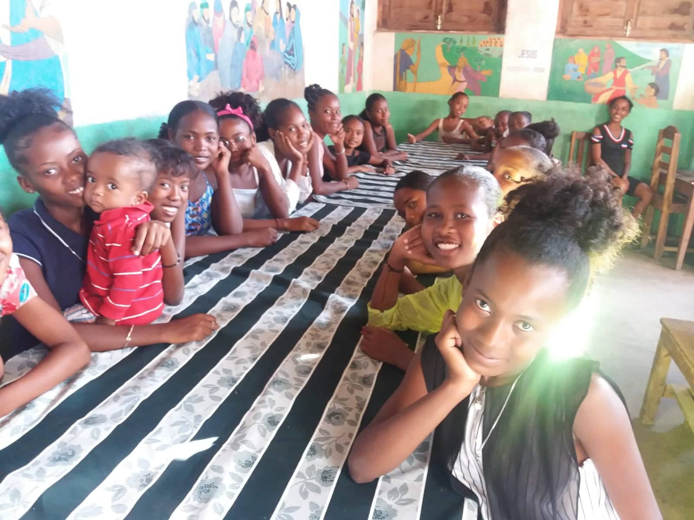

L'association
Fananarena est une école avec internat et cantine situé à Tuléar à Madagascar qui aide les enfants de la brousse à être scolarisés en leur fournissant un toit et la nourriture.
Les élèves apprennent le français et toutes les autres connaissances nécessaires pour avoir avoir une réussite scolaire.

Pour accompagner spirituellement au Seigneur la jeunesse avec une éducation intellectuelle également !
Prières, chants et lecture de la bible font partie de l'enseignement essentiel aux jeunes !
Ce centre reçoit tous les mineurs et ceux qui sont désireux d'obtenir une deuxieme chance dans leur jeunesse.